Despliegue de Infraestructura de Red y Servicios para Entorno Educativo
Diseño, virtualización e implantación integral de una arquitectura de red corporativa híbrida: controladores de dominio Windows Server 2022 con alta disponibilidad (DHCP Failover 50/50 y replicación DNS/AD), servidor de aplicaciones Linux Ubuntu bajo pila LAMP, integración de autenticación Active Directory con WordPress y despliegue de plataforma virtual de aprendizaje Moodle.
1. Resumen Ejecutivo & Objetivos
Frente a la necesidad de una infraestructura tecnológica moderna, eficiente y segura para una academia de idiomas, este proyecto concibe e implementa un ecosistema corporativo completo. La solución combina la robustez y centralización de Windows Server 2022 en la gestión de identidades y servicios de red con la flexibilidad y rendimiento de Ubuntu Server 22.04 LTS en el alojamiento de servicios web colaborativos.
- Gestión Centralizada de Identidades: Despliegue de un bosque de Active Directory para autenticar usuarios corporativos y alumnos con perfiles estandarizados.
- Alta Disponibilidad & Tolerancia a Fallos: Implementación de un controlador de dominio secundario en réplica y conmutación por error DHCP en modo balanceo 50/50.
- Integración Híbrida LDAP: Unificación de credenciales para que los usuarios del dominio accedan de forma transparente a las aplicaciones web corporativas.
- Servicios Educativos Digitales: Alojamiento de Moodle LMS para evaluaciones y entrega de tareas, portal corporativo WordPress y almacenamiento seguro vía FTP.
- Seguridad & Gobierno de Red: Políticas de grupo (GPOs) para control de escritorio, restricciones de navegación y asignación dinámica de recursos.
2. Arquitectura & Topología de Red
Para garantizar aislamiento, seguridad y simulación realista de un centro formativo, se estructuró una Red NAT dedicada (Red de la Academia) en el hipervisor de virtualización. En esta red se deshabilitó el servicio DHCP nativo del hipervisor para transferir el control absoluto a los servidores DHCP corporativos con exclusiones y reservas estáticas por dirección física (MAC).
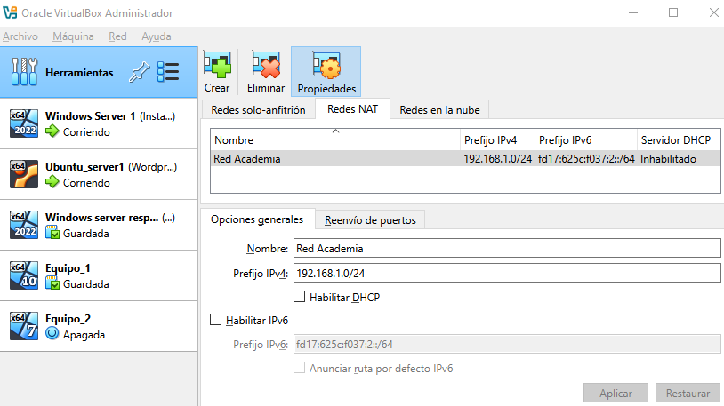
3. Plan de Direccionamiento IP & Asignación de Roles
Se diseñó un esquema de direccionamiento IPv4 privado en base a la subred 192.168.1.0/24,
reservando el rango 192.168.1.1 - 192.168.1.10 para elementos de infraestructura fija y servidores críticos.
| Host / Máquina | Sistema Operativo | Dirección IP | Rol y Servicios Asociados | Método de Asignación |
|---|---|---|---|---|
| Gateway Router | Enrutador NAT | 192.168.1.1 |
Puerta de enlace predeterminada y salida a Internet | Estática |
| SRV-DC01 | Windows Server 2022 | 192.168.1.2 |
Controlador Principal, Bosque AD DS, Servidor DNS, Servidor DHCP (Líder) | Estática |
| SRV-DC02 | Windows Server 2022 | 192.168.1.3 |
Controlador Réplica, DNS Secundario, DHCP Failover (Partner 50%) | Reserva DHCP por MAC |
| SRV-APLICACIONES | Ubuntu Server 22.04 LTS | 192.168.1.4 |
Pila LAMP (Apache, MySQL, PHP), Moodle LMS, WordPress, FTP vsftpd | Reserva DHCP por MAC |
| CLI-W10 (Equipo-1) | Windows 10 Pro | 192.168.1.11 - 192.168.1.254 |
Puesto de trabajo cliente unido a dominio con GPO corporativas | Dinámica (DHCP) |
| CLI-W07 (Equipo-2) | Windows 7 Pro | 192.168.1.11 - 192.168.1.254 |
Puesto de trabajo cliente secundario unido a dominio | Dinámica (DHCP) |
4. Windows Server Principal: AD DS, DNS & DHCP
El servidor principal actúa como el núcleo de autenticación y gestión del entorno. Tras la asignación de recursos (4 GB RAM, 50 GB disco, 2 vCPUs) e instalación de actualizaciones, se procedió al despliegue de roles clave.
// 4.1 Despliegue de Active Directory Domain Services (AD DS)
Se promocionó el servidor a Controlador de Dominio creando un nuevo bosque corporativo, configurando la contraseña de recuperación DSRM y estableciendo la base del árbol de objetos con Unidades Organizativas (OUs) específicas para Alumnos, Profesores y Administradores.
// 4.2 Servicio DHCP con Ámbitos y Reservas
Se instaló el rol DHCP autorizándolo con credenciales de Administrador del Dominio. Se configuró un ámbito de red
excluyendo el rango 192.168.1.1 - 192.168.1.10 para evitar colisiones con direcciones estáticas, y se fijaron
reservas estáticas por dirección MAC para el servidor réplica y el servidor Ubuntu.
// 4.3 Sistema de Nombres de Dominio (DNS Integrado)
Se definieron zonas de búsqueda directa e inversa con actualización dinámica de punteros PTR. Se crearon registros
tipo 'A' para resolver localmente los dominios web internos que apuntan al servidor Ubuntu:
www.wordpress.es y la zona directa de acceso a Moodle.
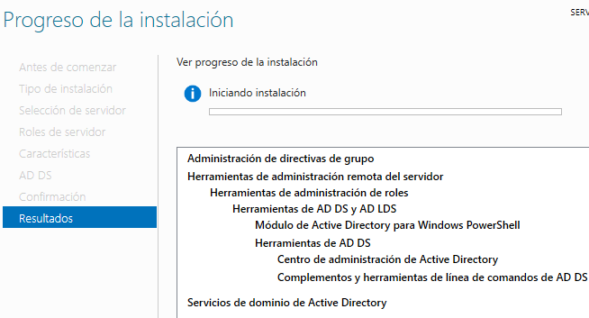
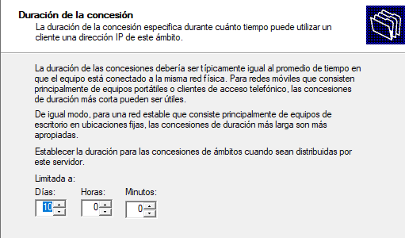
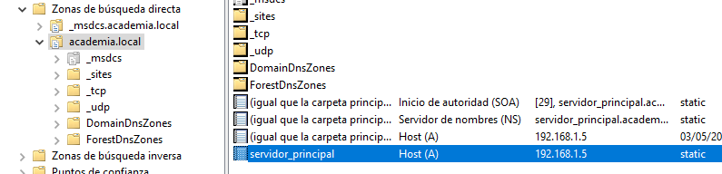
5. Políticas de Grupo (GPOs) & Gobierno del Puesto
Para asegurar la homogeneidad visual y facilitar el acceso a las plataformas de aprendizaje en los puestos cliente, se diseñaron dos directivas de grupo principales en la consola de administración de directivas (GPMC):
-
GPO Active Desktop (Fondo de Pantalla Corporativo): Se implementó la directiva
Active Desktop → Tapiz de Escritorioapuntando a un recurso compartido de red (\\SRV-DC01\Compartida\fondo.jpg) con permisos de lectura para usuarios autenticados. Se activó la directiva "No permitir cambios" para evitar modificaciones por parte del alumnado. - GPO Accesos Directos Automatizados: Mediante directivas de preferencias de usuario, se inyectaron directamente en el escritorio de cada cliente los enlaces a la plataforma Moodle y al portal WordPress de la academia.
- Filtrado de Seguridad de Directivas: Se configuraron permisos específicos para evitar que las restricciones de escritorio se aplicaran accidentalmente a las cuentas del grupo Domain Admins, garantizando la operatividad técnica.
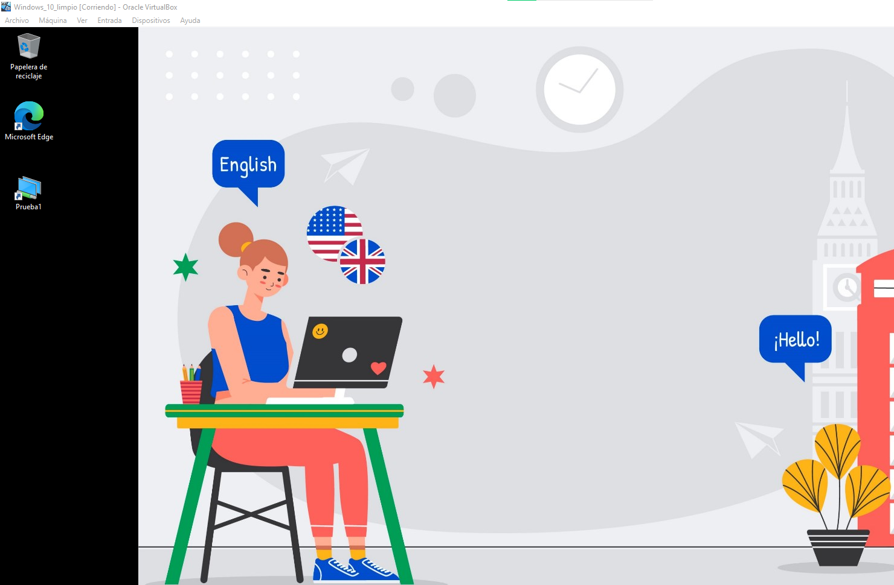
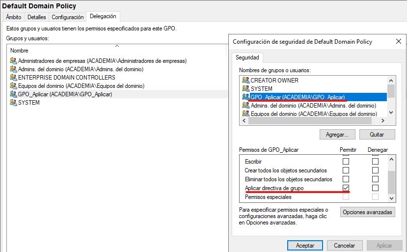
gpupdate.
6. Redundancia & Conmutación por Error (DHCP Failover 50/50)
Uno de los pilares de la ingeniería de sistemas es eliminar puntos únicos de fallo (SPOF). En este proyecto se añadió un segundo servidor Windows Server 2022 configurado como Controlador de Dominio Réplica.
A diferencia de un esquema pasivo tradicional (Hot Standby), se optó por un balanceo de carga 50/50. Ambos controladores comparten el conocimiento de las concesiones en tiempo real mediante el protocolo de conmutación por error DHCP de Windows Server. Si uno de los servidores sufre un reinicio o mantenimiento, el otro asume la totalidad de las peticiones sin que los equipos cliente pierdan conectividad.
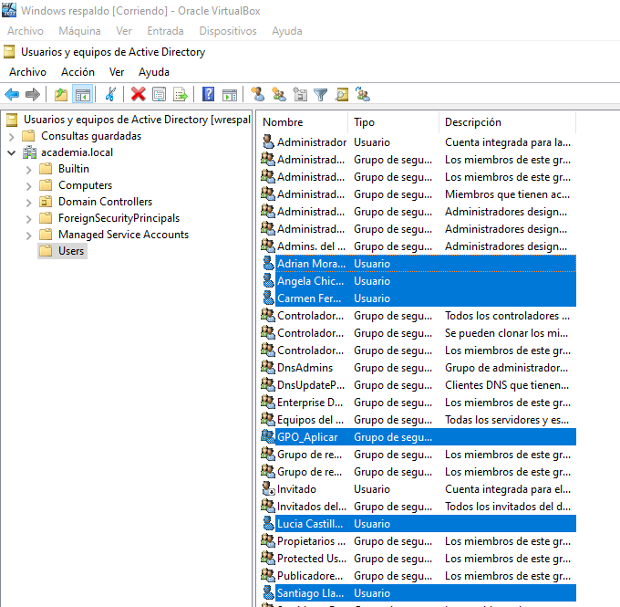
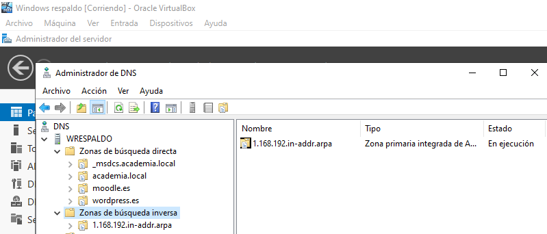
7. Servidor Linux Ubuntu 22.04 LTS & Pila LAMP
Los servicios de aplicación de la academia se desplegaron sobre un servidor Ubuntu Server 22.04 LTS bajo una arquitectura LAMP (Linux, Apache, MySQL, PHP):
- Apache2 HTTP Server: Configuración de Virtual Hosts dedicados para alojar múltiples plataformas bajo el mismo puerto HTTP con resolución por cabecera de host (ServerName).
- MySQL / MariaDB: Creación de bases de datos independientes con usuarios específicos de mínimos privilegios para Moodle y WordPress.
- PHP & Extensiones: Habilitación de módulos esenciales (
php-mysql,php-xml,php-curl,php-ldap,php-gd). - phpMyAdmin: Despliegue del entorno web para administración y optimización de las bases de datos relacionales.
8. Plataforma Educativa Moodle LMS & Servicio FTP
Se llevó a cabo la instalación completa de Moodle en /var/www/html/moodle,
configurando su base de datos relacional y el directorio seguro de almacenamiento moodledata fuera de la raíz web.
- Entorno Académico Virtual: Creación de cursos de idiomas, foros de dudas y módulos de evaluación interactiva.
- Servidor FTP Seguro (vsftpd): Instalación y configuración de
vsftpden Ubuntu para permitir a los administradores subir paquetes docentes, plantillas y archivos pesados desde el servidor Windows mediante FileZilla.
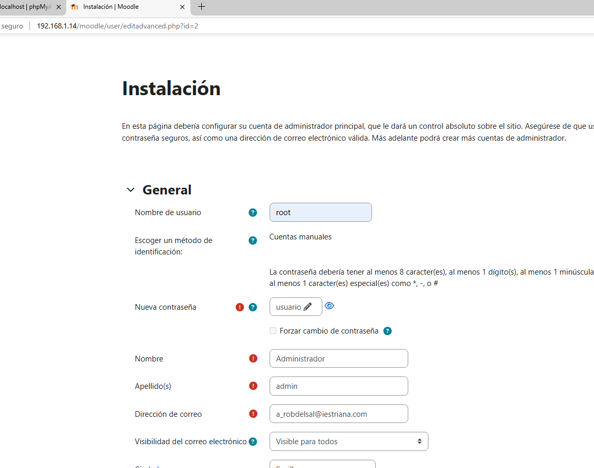
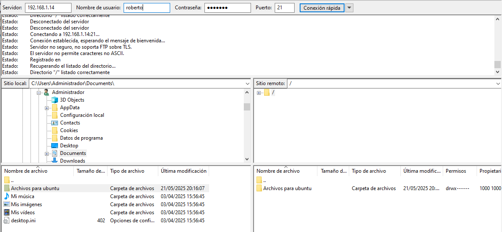
9. WordPress & Integración con Active Directory (LDAP SSO)
Uno de los hitos técnicos más destacados del proyecto fue la unificación de identidades entre Windows Server y la web corporativa. En lugar de gestionar cuentas por duplicado en el CMS, se implementó el plugin Active Directory Integration for Intranet Sites.
Cuando un alumno o docente accede a www.wordpress.es, introduce el mismo usuario y contraseña con el que inicia sesión
en su ordenador de aula. El servidor web efectúa una consulta LDAP segura contra el Controlador de Dominio (192.168.1.2).
Si las credenciales son válidas, WordPress provisiona la sesión al instante y le asigna el rol de colaborador/suscriptor automáticamente.
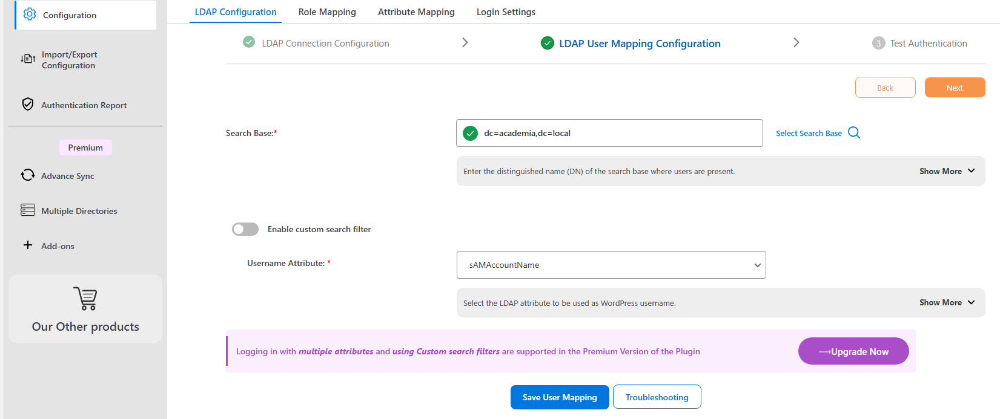
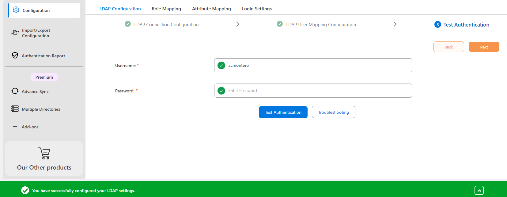
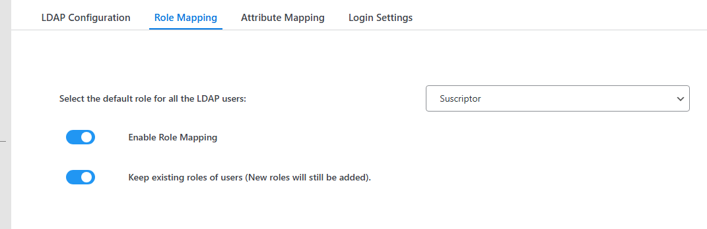
10. Puestos Cliente & Resolución de Incidencias
Se integraron dos equipos de prueba (Equipo-1 con Windows 10 y Equipo-2 con Windows 7)
en el dominio corporativo. Se comprobó la correcta recepción de direcciones DHCP, resolución DNS y aplicación
de políticas de grupo.
// Incidencias Técnicas Identificadas y Resueltas
- Conflicto de DHCP en el Hipervisor: Al iniciar las máquinas virtuales se producían solapamientos de red. Se subsanó desactivando el servidor DHCP embebido en la red NAT de VirtualBox para canalizar todo el tráfico por los servidores Windows.
-
Permisos de Escritura en el CMS: WordPress solicitaba credenciales FTP al instalar complementos.
Se solucionó definiendo
define('FS_METHOD', 'direct');enwp-config.phpy ajustando la propiedad del directorio awww-data:www-data. -
Acceso a phpMyAdmin: Se reconfiguró la directiva
AllowNoPasswordenconfig.inc.phpy se definió un usuario administrador de bases de datos con autenticaciónmysql_native_passwordpara permitir gestión remota controlada.
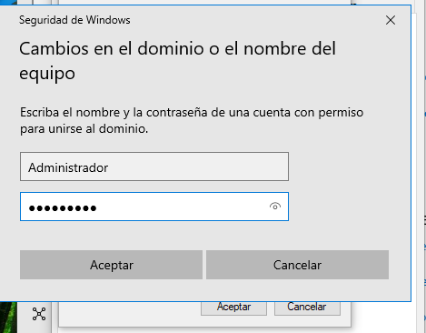
11. Conclusiones & Competencias Demostradas
El desarrollo de este Proyecto Fin de Grado permitió validar en un entorno práctico y controlado las competencias fundamentales del ciclo formativo de Administración de Sistemas Informáticos en Red (ASIR):
| Área Técnica | Tecnologías Aplicadas | Competencia Acreditada |
|---|---|---|
| Virtualización & Redes | VirtualBox, Redes NAT, DHCP, TCP/IP | Diseño de topologías aisladas y direccionamiento de subredes corporativas. |
| Sistemas Windows | Windows Server 2022, Active Directory, GPOs | Gobierno centralizado de usuarios, equipos y directivas de seguridad corporativas. |
| Alta Disponibilidad | DHCP Failover 50/50, Replicación DNS | Configuración de tolerancia a caídas sin impacto en la conectividad del usuario final. |
| Sistemas Linux & Web | Ubuntu 22.04 LTS, Apache2, MySQL, PHP | Despliegue y securización de la pila LAMP y gestión de plataformas LMS y CMS. |
| Integración Híbrida | LDAP, Single Sign-On (SSO) en WordPress | Interconexión de ecosistemas Microsoft y Linux para experiencia de usuario unificada. |